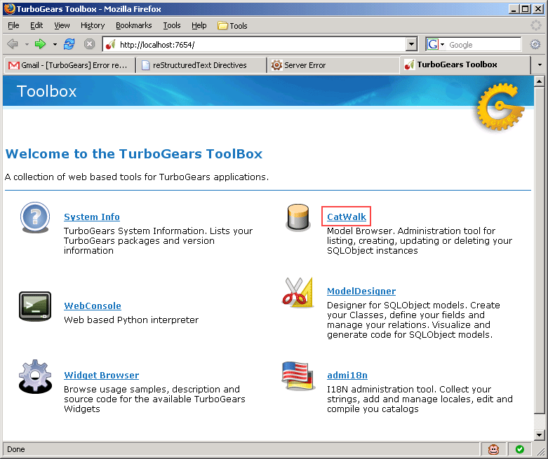
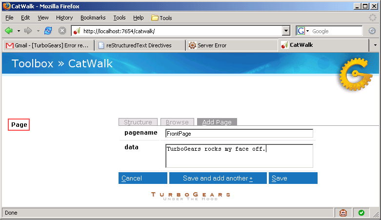

So we need to create some data in our page table. We can do it from a shell, but we’ll do it the fancy way with CatWalk, the model browser. Open up your second terminal and type:
tg-admin toolbox
A new browser window will open with the TurboGears toolbox. Click on the CatWalk model browser (marked in red below).
 You’ll see “Page” listed on the left (marked in red above). Click on that, select the “Add Page” tab and create a page with the name “FrontPage” and with whatever text you want for the data.
That’s all there is to it. We just created a new page in the database.
Reload your browser window, and you’ll see our beautiful page.
One of the fundamental features of a wiki is the ability to edit the page just by clicking “Edit This Page”. That and the wikispam that follows... hopefully, spammers won’t find your wiki before we’re done with it!
Let’s start by creating a template for editing. Let’s start with a copy of page.kid:
cd wiki20/templates
cp page.kid edit.kid
cd ../..
We need to replace the content with an editing form and ensure people know this is an editing page. Here’s the changes needed in edit.kid:
<!DOCTYPE html PUBLIC "-//W3C//DTD XHTML 1.0 Transitional//EN"
"http://www.w3.org/TR/xhtml1/DTD/xhtml-transitional.dtd">
<html xmlns="http://www.w3.org/1999/xhtml"
xmlns:py="http://purl.org/kid/ns#"
py:extends="'master.kid'">
<head>
<meta content="text/html; charset=utf-8"
http-equiv="Content-Type" py:replace="''"/>
<title> Editing ${page.pagename} - 20 Minute Wiki</title>
</head>
<body>
<div id="main_content">
<div style="float:right; width: 10em">
Editing <span py:replace="page.pagename">Page Name Goes Here</span>
<br/>
You can return to the <a href="/">FrontPage</a>.
</div>
<form action="save" method="post">
<input type="hidden" name="pagename" value="${page.pagename}"/>
<textarea name="data" py:content="page.data" rows="10" cols="60"/>
<input type="submit" name="submit" value="Save"/>
</form>
<!-- Remove <div py:replace="XML(data)">Page text goes here.</div> -->
</div>
</body>
</html>
Now that we have our view, we need to update our controller in order to display the form and handle the form submission. For displaying the form, we’ll add an edit method to our controller:
Tip
If you’re copying/pasting the code below, you must ensure that it goes in the Root class. This means you need to indent it. Ensure your editor is putting in all spaces for indention rather than a mix of tabs and spaces. Finally, remember to repeat this for all the samples, especially if you get a 404 error. There’s a “watch the indent” as a reminder, but people still get tripped up.
#... imports, etc
# watch the indent
@expose(template="wiki20.templates.page")
def index(self, pagename="FrontPage"):
page = Page.byPagename(pagename)
content = publish_parts(page.data,
writer_name="html")['html_body']
return dict(data=content, page=page)
@expose(template="wiki20.templates.edit")
def edit(self, pagename):
page = Page.byPagename(pagename)
return dict(page=page)
This method is very similar to our index method. The main difference is that the index method renders the wiki content as HTML, and this one returns an unprocessed page object.
We need a way to get to our edit method, so we’ll edit page.kid to add this below our content:
<div id="main_content">
<!-- ... -->
<div py:replace="XML(data)">Page text goes here.</div>
<p><a href="${tg.url('/edit', pagename=page.pagename)}">Edit this page</a></p>
</div>
That should do it! Reload the page in your browser, and you’ll see the edit link. Follow that link, and you’ll get a page that lets you edit. Don’t click that save button, yet! We still need to write that method.
When we displayed our wiki’s edit form in the last section, the form’s action was /save. So, we need to make a method called save in the Root class of our controller. Here’s what it looks like:
# index method, etc
# watch the indent
@expose(template="wiki20.templates.edit")
def edit(self, pagename):
page = Page.byPagename(pagename)
return dict(page=page)
@expose()
def save(self, pagename, data, submit):
page = Page.byPagename(pagename)
page.data = data
turbogears.flash("Changes saved!")
raise turbogears.redirect("/", pagename=pagename)
Interesting things to note about this:
Unlike the previous methods we’ve made, this one is just @expose()‘d without any template specified. That’s because we’re only redirecting the user back to the viewing page.
A transaction is set up for us implicitly, if our database supports transactions.
You can see for yourself... if you were to add raise ValueError after page.data is set in that method, you’ll see that the data is not actually saved in the database. If no exception is raised, the data is committed.
If an exception is raised, the changes are rolled back. The exception to this rule is with redirects: they short-circuit execution of the method, but they don’t count as “errors.”
The page.data = data is all it takes to create the appropriate UPDATE SQL statement.
The turbogears.flash() call is setting a notification message to appear in the user’s browser on the next screen. You’ll see a reference to the tg_flash variable in the master.kid template.
Since a redirect is raised as an exception, all other processing is short circuited. Very handy!
Go ahead and try it out! You can make changes and save the page we were editing. Pretty wiki-like, no?